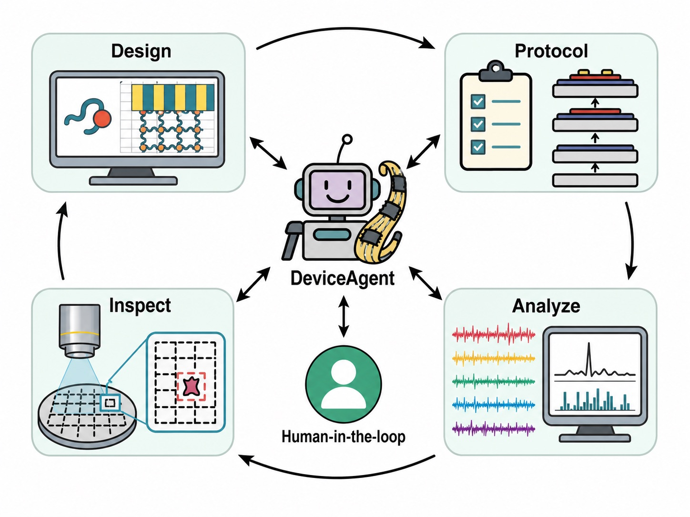

Cell 2023 (cover) · In situ electro-sequencing Science 2026 · Human islet electrical maturation Nat. Commun. 2026 · In situ graphene-seq
Nature 2025 (cover) · Tissue-level-soft brain implantation Nat. Protoc. 2025 · Cyborg organoids Sci. Adv. 2023 · Cardiac microtissue nanoelectronics
Nat. Neurosci. (accepted) · Spike sorting AI agent Nat. Methods (accepted) · Spatial transcriptomics AI agent In revision, Cell · Universal behavior-analysis agent In revision, Nat. Electron. · DeviceAgent for flexible bioelectronics 